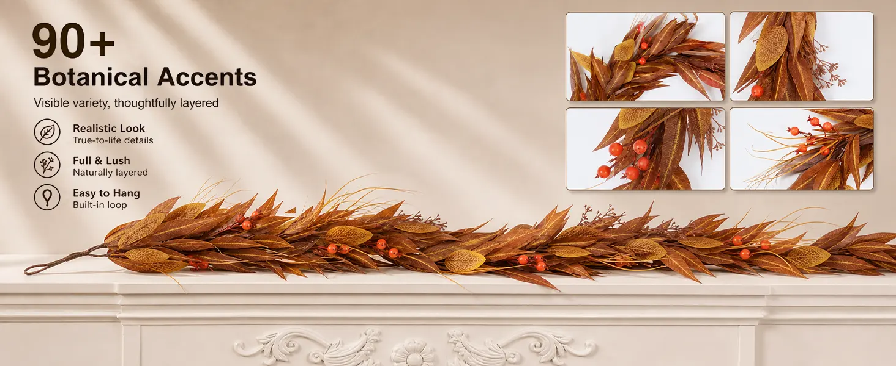
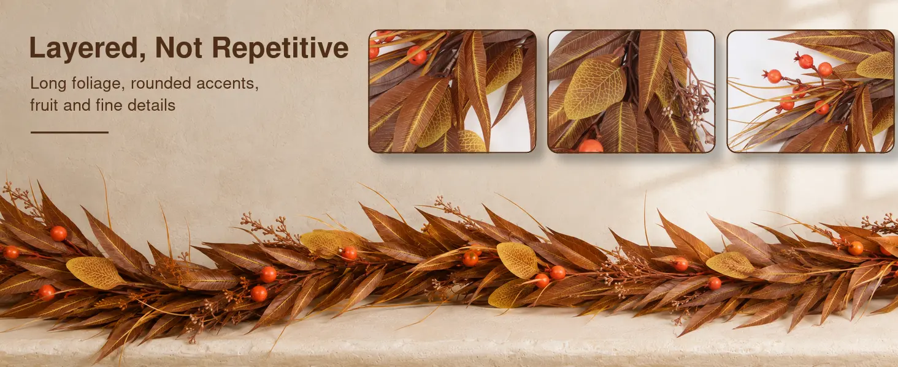
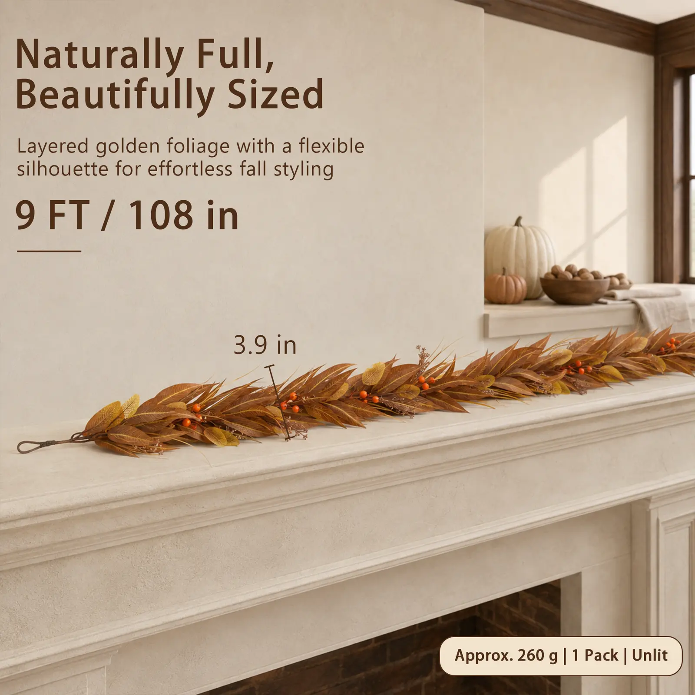
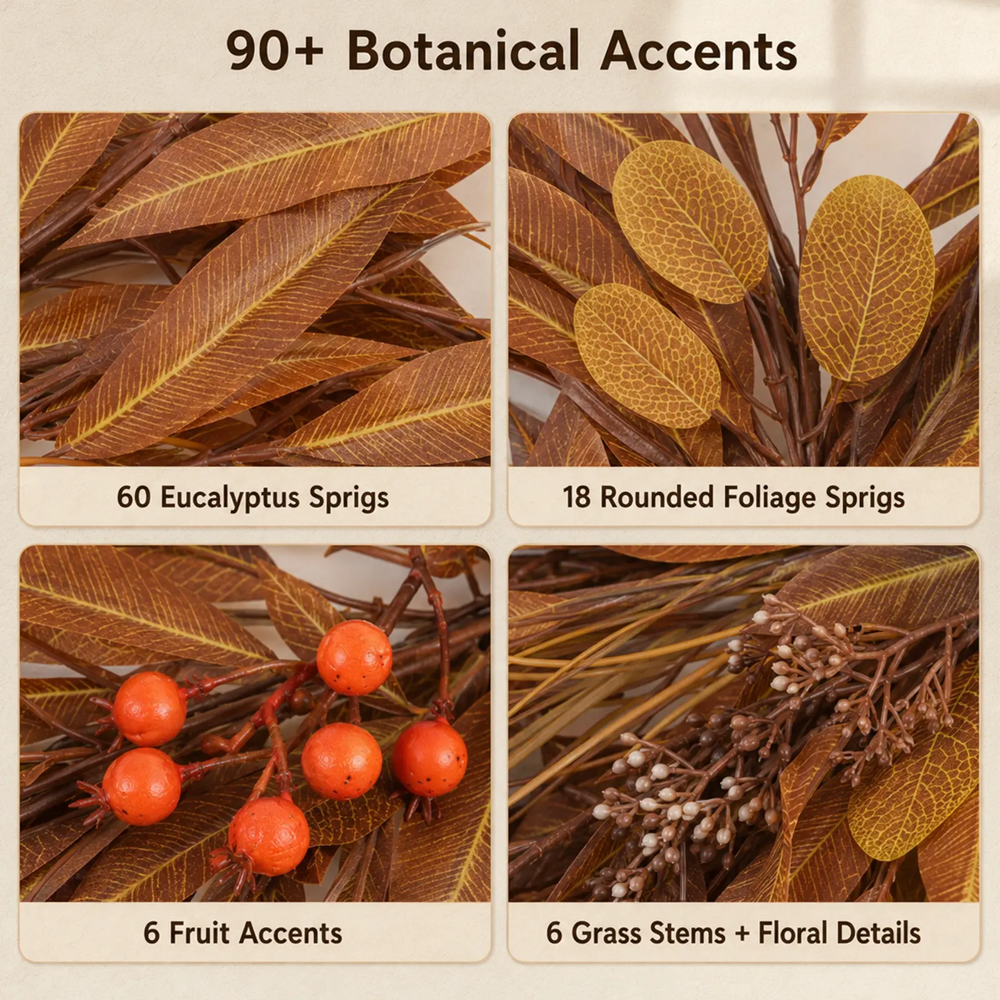

Skip to content
ZCF
.
Home
Fashion
Products
About
View Work
→
← Home
/
Products
/
Greenery
Thanksgiving Garland
Greenery · 18 images
← Back to results
A+
Main Images
Secondary Images
A+


Main Images
Secondary Images


← Previous project
Autumn Mantel Garland
Next project →
Warm-Toned Autumn Garland
← Back to results
Return to Home
↗
←
→
Open full-size
×